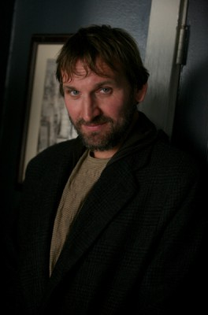
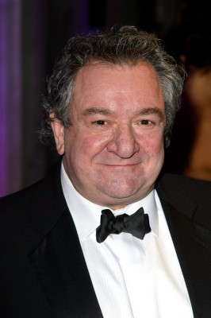
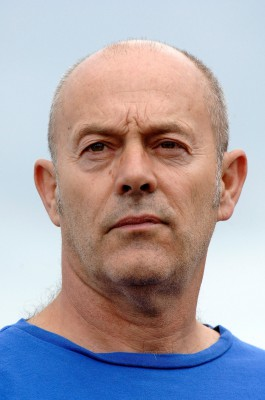
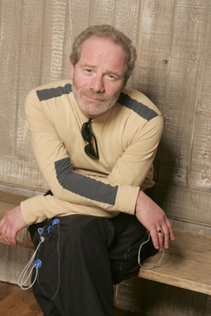
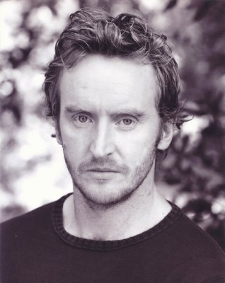

#5110 Kleine Morde unter Freunden
Alternativ: Shallow Grave
Auszeichnungen: 14 BAFTA-Awards gewonnen


 IMDB-Wertung: 7.4 / 10
IMDB-Wertung: 7.4 / 10  Metascore: 0
Metascore: 0 
Die Krankenschwester Juliet, der Buchhalter David und der Journalist Alex suchen für seine WG einen vierten Mitbewohner. Die Drei entscheiden sich für den mysteriösen Hugo, den sie am nächsten Tag prompt nach einer Überdosis tot in seinem Zimmer finden - einen Koffer voller Geld neben ihm. Nach langem Hin und Her beschließen sie, das Geld zu behalten und die Leiche zu vergraben. Weil dies leichter gesagt als getan ist, wird in der Folge die WG-Freundschaft auf eine mörderische Probe gestellt.
Jahr: 1994
Dauer: 92 Minuten
FSK: 16
Land: England Studio: MFA FilmdistributionTonspuren: DD5.1 - ,
Untertitel: Englisch,
Auflösung: 1080p (1920x1040) Größe: 14540 MB
Genre: Thriller, Krimi
Regisseur:  Danny Boyle
Danny Boyle
Drehbuch: Federico Moccia
Soundtrack:
Darsteller:
- Kerry Fox als Juliet Miller
-  Christopher Eccleston als David Stephens
 Ewan McGregor als Alex Law
Ewan McGregor als Alex Law-  Ken Stott als Detective Inspector McCall
-  Keith Allen als Hugo
- Colin McCredie als Cameron
- Gary Lewis als Male Visitor
-  Peter Mullan als Andy
-  Tony Curran als Travel Agent
- Victoria Nairn als Woman Visitor
- Jean Marie Coffey als Goth
- Leonard O'Malley als Tim
- David Scoular als Cash Machine Victim
- Grant Glendinning als Bath Victim
- Victor Eadie als Freezer victim
- Robert David MacDonald als Lumsden
- Frances Low als Doctor
- Bill Denistoun als Master of Ceremonies
- John Bett als Brian McKinley
- Elspeth Cameron als Elderly Woman
- Paul Doonan als Newspaper Office Boy
- Billy Riddoch als Newspaper Editor
- Kenneth Bryans als Police Officer
- John Hodge als D.C. Mitchell
- John Carmichael als Bandleader
- Gordon Cree als Danceband Pianist , uncredited
- Pat Harkins als Postman , uncredited
Datei: X:\1994\Kleine Morde unter Freunden (1994, FSK16, 1920x1040).mkv seit 23.12.2016
Festplatte: HD 1992-1995
 Es gibt insgesamt 67 Filme in der Gruppe '1994'
Es gibt insgesamt 67 Filme in der Gruppe '1994'